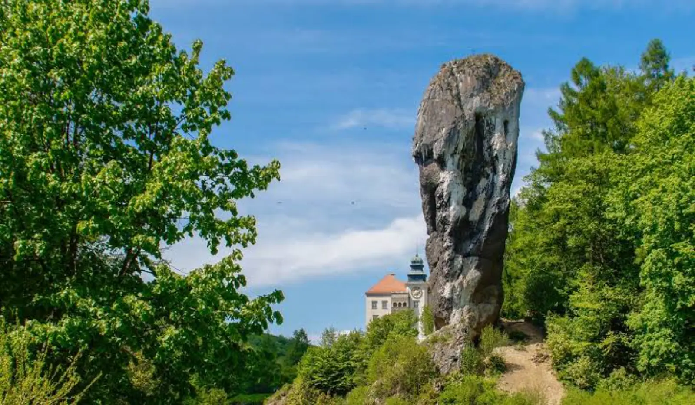

The largest castle ruins of the Kraków-Częstochowa Jura. Limestone rocks, legends, and sunset over the valley. Slow travel through Ogrodzieniec Castle.
Why Ogrodzieniec, differently
Ogrodzieniec Castle is the most famous Eagle's Nest on the Kraków-Częstochowa Jura — a mighty stronghold of which only picturesque ruins remain today. It stands on the highest hill of the Jura (515 m) and towers over the area, offering views of dozens of kilometres in every direction. The castle's history is a tale of power and destruction.
Slow travel through Ogrodzieniec is a journey through the limestone landscape of the Jura. White rocks rising from green forests, caves hidden underground, paths leading between rock formations — all this makes a walk here a lesson in geology and history at once. Sunset from the viewpoint next to the castle is an experience that stays in memory for a long time — warm light falling on the ruins, the silence of the Jura forests, and a sky painted red and orange. This is a land that rewards those who slow down — the longer you are here, the more details you notice: traces of former inhabitants, interesting rock formations, panoramas that change with every time of day.
What to see
Ogrodzieniec Castle is not just the ruins themselves — it is a whole complex of attractions: walls, towers, courtyard, exhibitions, surrounding rocks. Half a day is enough to see it, but it is worth devoting a full day.
Castle and ruins
- Ogrodzieniec Castle — the largest castle ruins of the Kraków-Częstochowa Jura, from the 14th century. Visiting takes ~1.5 hours. Worth it for architecture and history.
- Defensive walls and towers — fragments of defensive walls and towers, from which views over the area open up. Worth it for panoramas.
- Castle courtyard — a large courtyard inside the ruins, where cultural events are held. Worth it for the atmosphere.
- Castle tower — the highest tower of the castle, with a viewpoint. Worth climbing for the best views.
- Exhibitions in the ruins — exhibitions about the history of the castle and region, placed in various parts of the ruins. Worth it for context.
Rocks and caves
- Rocks around the castle — rock formations around the castle, with numerous viewpoints. Worth a walk and photography.
- Góra Birów — a hill next to the castle, with a reconstruction of a Slavic stronghold. Worth it for history and views.
- Deep Cave — a cave in the area of the castle, accessible to tourists. Worth it for unusual experiences.
- Eagle's Nests Trail — a tourist trail leading through the castles and strongholds of the Jura. Worth it for history enthusiasts.
- Viewpoints — several viewpoints in the area, with a panorama over the Jura and surrounding castles. Worth it for photography.
Surroundings
- Ojców National Park — a national park with limestone rocks and caves, ~40 km from Ogrodzieniec. Worth it for walks.
- Pieskowa Skała — a Renaissance castle in Ojców NP, ~50 km from Ogrodzieniec. Worth it for architecture.
- Bobolice Castle — a restored castle on the Jura, ~20 km from Ogrodzieniec. Worth it for architecture.
- Mirów Castle — ruins of a castle on the Jura, ~15 km from Ogrodzieniec. Worth it for history.
- Olkusz — a town with a market square and accommodation base, ~15 km from Ogrodzieniec.
- Zawiercie — a town with accommodation base, ~15 km from Ogrodzieniec.
When to go
- April and May — the best time. Fewer tourists, long days, stable weather. Worth a walk in the ruins.
- September and October — second best. Autumn colours in the forests around the castle, clear air, fewer people.
- July and August — peak season. Castle crowded, car parks full. If you must — pick a weekday and come in the morning.
- November–March — the castle in winter is less crowded, but the ruins can be icy. Worth it for those who want to see the castle without crowds.
Getting there
- By car: ~1.5 hours from Kraków (DK94), ~1 hour from Katowice (DK94), ~3.5 hours from Warsaw (S7 and DK94). Car park at the castle (paid, in season full from 9 a.m.).
- By train: station in Zawiercie or Olkusz (~15 km from Ogrodzieniec), with connections from Kraków (~1.5 hours), Katowice (~1 hour). Then bus or taxi.
- By bus: PKS and private operators from Kraków, Katowice and other cities.
Within the castle area you can walk. A car is useful to explore the surroundings (Ojców NP, Pieskowa Skała, Bobolice).
How much time you need
Half a day (3–4 hours) is the minimum for a visit to the castle and a walk in the ruins.
A full day lets you add a walk on the rocks around the castle, a visit to Góra Birów and the viewpoints.
A weekend (2 days) lets you combine Ogrodzieniec with Ojców NP, Pieskowa Skała or Bobolice.
What to eat and where to sleep
- Lesser Poland cuisine — pierogi, duck with apples, żurek. Worth trying in local inns.
- Grilled trout — from local farms in the region.
- Grilled oscypek — smoked sheep cheese with cranberry, available at shepherd huts.
- Beer from a local brewery — several craft breweries in the region.
- Coffee and cake — Olkusz and Zawiercie have several good cafés.
- Korycin cheeses — smoked and aged, available in local shops.
Accommodation: Ogrodzieniec (village by the castle, smaller choice), Olkusz (town, more options), Zawiercie (town, more options), Ojców NP (~40 km, more options), Kraków (~50 km, more options). Book ahead in summer season.
Practical tips
- Bookings — tickets for the castle are worth booking in advance, especially in season. Guided tours have a limited number of places.
- Guided tours — the castle's history is complex, and without context many ruins look similar. Worth going with a guide or audio guide.
- Sunset — viewpoints next to the castle are best at sunset. Arrive 1–2 hours before sunset.
- Shoes — sturdy shoes are essential for a walk in the ruins and on the rocks. Stones and roots can be slippery.
- Crowds — the castle is crowded in season (May–September). Come in the morning or on weekdays.
- Parking — the car park at the castle is paid. In season it fills from 9 a.m.
- Signal — good throughout the castle area.